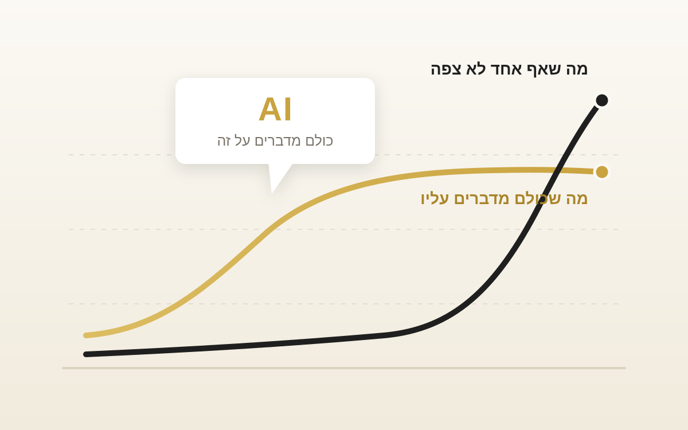

האם מניות טכנולוגיה ימשיכו לתת תשואות יתר בשנים הבאות?

זו שאלה טובה וכדאי שנחשוב עליה. העיקרון המרכזי הוא ששוק ההון מגלם ציפיות, וכל מה שהציבור והעיתונות חוזים שיקרה בעתיד לרוב כבר מגולם במחיר המניה.
צמיחה כלכלית היא לא תשואה
יש הרבה דוגמאות לאורך ההיסטוריה לכך שדווקא המדינות שהציגו את הצמיחה הכלכלית הגבוהה ביותר הניבו לעיתים קרובות תשואות מניות נמוכות מהממוצע. הצמיחה הייתה שם, היא פשוט כבר הייתה בתוך המחיר שהמשקיעים שילמו מראש.
הדוגמה המרכזית היום היא הבינה המלאכותית
אנשים משקיעים ספציפית במניות בינה מלאכותית ומצפים שהן יניבו תשואה פנומנלית. אבל צמיחה של תעשייה לא בהכרח באה יחד עם התשואה שנעשה ממנה, כי המחיר כבר מגלם את הציפיות האלה והשוק כבר העלה אותו בהתאם.
יכול להיות שדווקא התעשיות הלא מוכרות, שפחות מדברים עליהן, הן אלה שיניבו את התשואה הגבוהה ביותר, כי השוק לא תמחר אותן גבוה מלפני.
ולא צריך ללכת רחוק בשביל דוגמה
ב-2025, בזמן שכל העולם דיבר על בינה מלאכותית, זה מה שקרה:
אני בטוח שרובנו המוחלט לא היה יכול לחזות תשואה כזאת, וזה גם נוגד את ההיגיון בסופו של דבר.
לסיכום, צמיחה כלכלית ותשואות לא בהכרח הולכות יחד. להשקיע על סמך כותרות יכול להיות דבר מסוכן שיגרום לנו להפסיד הרבה כסף.
זה למה אני אישית מעדיף להשקיע בפיזור כמה שיותר רחב, כי אני יודע כמה קשה לחזות איזו תעשייה תעשה תשואה יוצאת דופן בעתיד.
רוצים להעמיק בנושא?
כתבתי בהרחבה על השאלה האם נכון לתת משקל יתר לסקטור מוביל בתיק, ומה ההיסטוריה מלמדת על סקטורים שניצחו בעשור מסוים.
האם נכון לתת מקום עודף בתיק לסקטור הטכנולוגיה? ←רוצים לבנות תיק מפוזר שמתאים לכם?
ליווי אישי שיעזור לכם להבין פיזור, סיכון ובניית תיק לטווח ארוך
דברו איתי עכשיוהכתוב אינו מהווה ייעוץ השקעות ואינו תחליף לייעוץ אישי. שיתוף ידע ודעה בלבד. תשואות עבר אינן מעידות על תשואות עתיד.